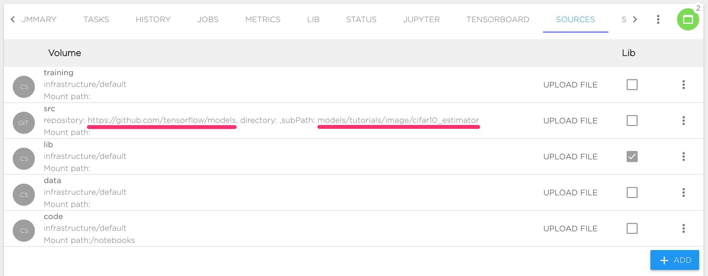
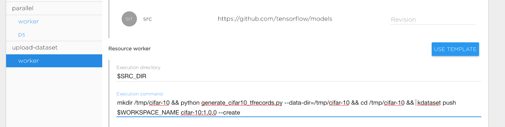
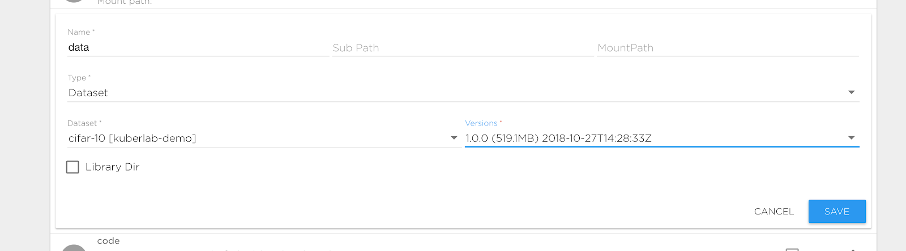

Train CIFAR-10 Model from scratch using Kibernetika.AI#
This tutorial shows basic steps required to train CIFAR-10 model using original source code from https://github.com/tensorflow/models/tree/master/tutorials/image/cifar10_estimator
Install Tensorflow project#
- Start creating a new project in your Workspace. More details
- Set Tensorflow version 1.9.0
- Set source location to https://github.com/tensorflow/models/tree/master/tutorials/image/cifar10_estimator
Notes:
In this case, https://github.com/tensorflow/models will be used as a Source repository and models/tutorials/image/cifar10_estimator as a subpath:

Contents of this repository dir will be visible inside Jupyter or running Job under $SRC_DIR path, usually SRC_DIR is an alias for /norebooks/src
Prepare Dataset#
First, we need to upload CIFAR-10 to Kibernetika. There are two options to upload data.
- Upload data to some project directory, for example to $DATA_DIR.
- Upload data to Kibernetika DataSet Catalog.
The second option is preferable as it will allow you to track versions of your dataset and also use the dataset in other projects.
Following steps required to upload dataset to catalog:
- Create new task upload-dataset with resource worker for dataset uploading. Inside the project, clone an existing task or create a new one from scratch.
- After creating the task we are ready to define the execution command for uploading. The CIFAR-10 project already has code for that. Our task definition looks like:

Basically we defined the following parameters:
- Execution Directory: $SRC_DIR refers to the location our CIFAR-10 source code is
- Execution Command:
mkdir /tmp/cifar-10 && python generate_cifar10_tfrecords.py --data-dir=/tmp/cifar-10 && cd /tmp/cifar-10 && kdataset push $WORKSPACE_NAME cifar-10:1.0.0 --create - Ensure that Source is mounted to your task. Open "Advanced" section at the bottom of form and check option "Default volume mapping" or add needed volume manually.
During running of the new task the following steps will be executed:
- Make temporary directory /tmp/cifar-10
- Use generate_cifar10_tfrecords.py to upload dataset to /tmp/cifar-10
- Change current directory /tmp/cifar-10
- Push cifar-10 dataset to current workspace DataSet catalog (use environment variable $WORKSPACE_NAME for current workspace) as version 1.0.0. Option --create means create dataset if it doesn’t exist.
After execution upload-dataset we can refer our data directory to the created dataset. Change definition data volume in the Sources tab to point it to the newly created dataset:

Notes:
- kdataset command is always present in Kibernetika environment
- you also could push dataset to catalog directly using python script:
from mlboardclient.api import client
mlboard = client.Client()
mlboard.datasets.push(
os.environ.get('WORKSPACE_NAME'),
'cifar-10',
'1.0.0',
'/tmp/cifar-10',
create=True,
)
Standard Train model#
To start training, we need to configure resource worker in task standalone to train the model.
- Set execution directory to $SRC_DIR
- Set execution command to:
python cifar10_main.py --num-gpus=$GPU_COUNT --train-steps=1000 --data-dir=$DATA_DIR --job-dir=$TRAINING_DIR/$BUILD_ID - Set required GPU count in the Resources section
- Start task
Notes:
- $TRAINING_DIR is an alias for preconfigured training directory, see Sources tab
- $BUILD_ID is an alias for sequential job id, every running job has a unique id
- $GPU_COUNT is an alias for number of GPU allocated for execution on one compute node
You can see execution logs in the Jobs tab. Use Tensorboard tab to see your training progress. The result of model training is available under training directory $TRAINING_DIR/$BUILD_ID (usually /notebooks/training/1,2…).
Distributed training#
ATTENTION: CIFAR-10 Tensorflow original model is based on tf.contrib.learn which was deprecated since Tensorflow 1.7 and distributed configuration is not compatible with newer tensorflow version. We recommend migrating your code to Tensorflow Estimators. In the Kibernetika platform you can use distributed training for both old and new style models, see details below.
First, we need to define resources that will be used for distributed training, e.g. workers and parameter servers.
- Change parallel/worker Execution Command to:
TF_CONFIG=$(tf_conf worker --chief_name master) python cifar10_main.py --num-gpus=$GPU_COUNT --train-steps=1000 --data-dir=$DATA_DIR --job-dir=$TRAINING_DIR/$BUILD_ID --sync - Set parallel/worker Replicas Count to 2 or more
- Set parallel/worker GPU Count to 1
- Change parallel/ps Execution Command to:
TF_CONFIG=$(tf_conf ps --chief_name master) python cifar10_main.py --num-gpus=$GPU_COUNT --train-steps=1000 --data-dir=$DATA_DIR --job-dir=$TRAINING_DIR/$BUILD_ID --sync
Now we are ready to start distributed training. During execution the following process will be started:
- Two workers, one of them is chief
- One Parameter server
Notes:
- Remove --sync options for asynchronous training, see Tensorflow documentation for more details.
- tf_conf command is always present in Kibernetika environment
Usage of tf_conf command#
tf_conf is basic script that helps define the environment for Tensorflow distributed training.
usage: tf_conf [-h] [--worker WORKER] [--ps PS] {worker,ps,eval} [--chief_name CHIEF_NAME]
positional arguments:
{worker,ps,eval} Set executable role
optional arguments:
-h, --help show this help message and exit
--worker WORKER Worker resource name
--ps PS PS server resource name
--chief_name CHIEF_NAME Name for the chief worker. 'chief' for newer Tensorflow version and 'master' for tf.contrib.learn
Also, you could setup distributed configuration directly in your code:
from mlboardclient import utils
conf = utils.setup_tf_distributed(mode, worker_names='worker', ps_names='ps',chief_name='cheif')
os.environ['TF_CONFIG'] = conf
Notes:
- Please see link for more low levels details about distributed training on the Kibernetika platform.
- Please see horovod for using Horovod and OpenMPI for distributed training